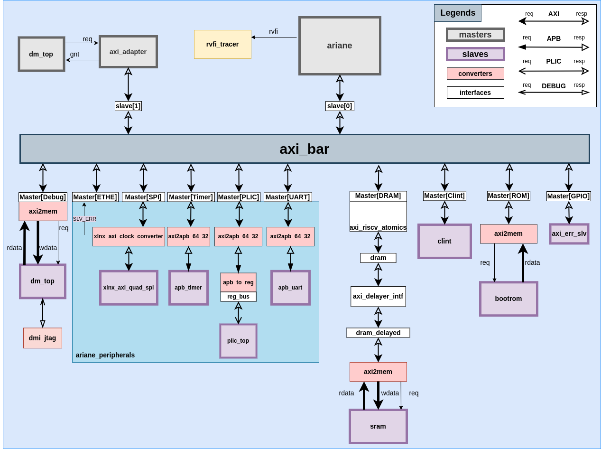
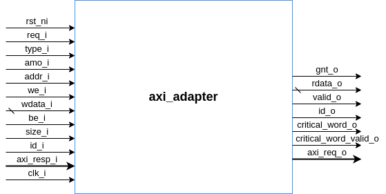
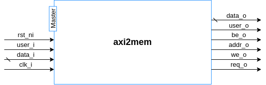
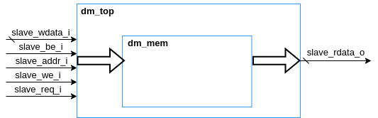
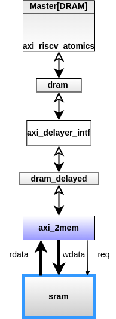
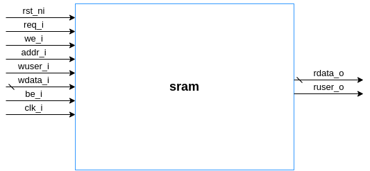
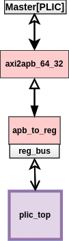

CVA6 Testharness
ariane_testharness is the module where all the masters and slaves have been connected with the axi crossbar.There are two masters and ten slaves in this module.Their names and interfaces have been mentioned in the table below.
| Slaves | Interfaces | Masters | Interfaces | | ———– | ———– | ———– | ———– | | DRAM | master[0] | ariane | slave[0] | | GPIO | master[1] | debug | slave[1] | | Ethernet | master[2] | | | | SPI | master[3] | | | | Timer | master[4] | | | | UART | master[5] | | | | PLIC | master[6] | | | | CLINT | master[7] | | | | ROM | master[8] | | | | Debug | master[9] | | |
The following block diagram shows the connections of the slaves and masters in the ariane_testharness module.

Ariane
The ariane core is instantiated as i_ariane in ariane_testharness module. It is acting as a master in ariane_testharness.
The following is the diagram of the ariane module along with its inputs/outputs ports.
ipi, irq and time_irq are being sent to this module from the ariane_testharness module.
The AXI request and response signals that are being passed from the ariane_testharness to ariane module are the following:
.axi_req_o ( axi_ariane_req ),.axi_resp_i ( axi_ariane_resp )
In the ariane_testharness module, axi_ariane_req and axi_ariane_resp structs are being linked with the slave[0] (AXI_BUS interface) in a way that the information of axi_ariane_req is being passed to the slave[0] and the information from the slave[0] is being passed to the axi_ariane_resp struct. The following compiler directives are being used for this purpose.
AXI_ASSIGN_FROM_REQ(slave[0], axi_ariane_req)AXI_ASSIGN_TO_RESP(axi_ariane_resp, slave[0])
Rvfi_o is the output of ariane and it will go into the rvfi_tracer module.
Debug
Master
axi_adapter is acting as a master for the debug module.
The following is the diagram of the axi_adapter module along with its signals.

The AXI request and response that signals are being passed from the test_harness module are the following:
.axi_req_o ( dm_axi_m_req ).axi_resp_i ( dm_axi_m_resp )
Slave[1] is the interface of AXI_BUS and it actually acts as a master for axi_protocol.
The dm_axi_m_req and dm_axi_m_resp are being linked with the slave[1] AXI_BUS interface in this way that the requests signals of the dm_axi_m_req are being passed to the slave[1] and the response signals from the slave[1] are being passed to the dm_axi_m_resp struct.
AXI_ASSIGN_FROM_REQ(slave[1], dm_axi_m_req)AXI_ASSIGN_TO_RESP(dm_axi_m_resp, slave[1])
Slave
This is the memory of debug and axi2mem converter is used whenever a read or write request is made to memory by the master.
axi2mem module simply waits for the ar_valid or aw_valid of the master (actual slave) interface and then passes the req_o, we_o, addr_o, be_o, user_o signals and data_o to the memory and will receive the data_i and user_i from the memory.

The memory is has been instantiated in the dm_top module and the hierarchy is as follows:

CLINT
Clint is a slave in this SoC. The signals of the clint module are as follows:
ipi_o (inter-processing interrupt) and timer_irq_o (timer_interrupt request) are generated from the clint module and are the inputs of the ariane core.
This module interacts with the axi bus interface through the following assignments:
AXI_ASSIGN_TO_REQ(axi_clint_req, master[ariane_soc::CLINT])
This compiler directive is used to transfer the request signals of the master via the interface mentioned as master[ariane_soc::CLINT] to the struct axi_clint_req.
AXI_ASSIGN_FROM_RESP(master[ariane_soc::CLINT], axi_clint_resp)
This compiler directive is used to assign the response of the slave (in this case clint module) from the
Axi_clint_resp struct to the interface master[ariane_soc::CLINT].
Bootrom
axi2mem module is used to communicate with bootrom module. The signals of this memory have been shown in the diagram below:
Bootrom is pre-initialized with ROM_SIZE = 186.
SRAM
The complete sequence through which a request to SRAM is transferred is as follows:

dram and dram_delayed are two AXI_BUS interfaces.
The slave modport of AXI_BUS interface for Master[DRAM] has been linked with axi_riscv_atomics module and the request of the master has been passed to dram interface (another instantiation of interface of AXI_BUS). All this is for the exclusive accesses and no burst is supported in this exclusive access.
dram and dram_delayed interfaces have also been passed to axi_delayer_intf module as a slave modport and master modport of the AXI_BUS interface, respectively. The axi_delayer_intf module is used to introduce the delay.
dram_delayed is also passed to the axi2mem module as a slave modport of AXI_BUS interface. axi2mem module with dram_delayed as an AXI_Bus interface will interact with SRAM.
SRAM is a word addressable memory with the signals as follows:

GPIO
GPIO is not implemented, error slave has been added in place of it.
UART
There are two signals for the apb_uart module in the ariane_testharness, namely tx and rx for transmitting and receiving the data.
axi2apb_64_32, module has been used to convert the axi protocol five channel signals to a single channel apb signals. The axi2apb_64_32 module has been used between AXI_BUS and apb_uart module.
The signals of the apb_uart module have been shown in the diagram below:
Only the signals related to the test_harness have been shown in the above diagram.
PLIC
PLIC is a slave in this SoC. The hierarchy through which the request is propagated to the plic_top module is as follows:

axi2apb_64_32 has been used to convert all the plic axi signals into apb signals.
apb_to_reg is used to assign the apb signals to the reg_bus interface which basically communicates with the plic_top module. In apb_to_reg module, the logical AND of psel and penable signals of apb makes the valid signal of reg_bus interface.
The signals of the plic_top have been shown below:
Timer
The axi2apb_64_32 module has been used to convert all the timer axi signals into timer apb signals.The diagram of the apb_timer is as follows.
The signals of apb protocol have been shown in the form of apb_timer_req and apb_timer_resp in the above diagram.
Ethernet
Ethernet is a slave in this testharness.
Ethernet support has not been added in the ‘ariane_testharness’ at this time. For any read or write request from the master to this module is returned with
"ethernet.b_resp = axi_pkg::RESP_SLVERR"
where,
"localparam RESP_SLVERR = 2'b10;" in axi_pkg
which shows "Slave error". It is used when the access has reached the slave successfully, but the slave wishes to return an error condition to the originating master.”
SPI
SPI is a slave in this testharness.
Support of the of SPI protocol is present in the SoC, but at this time it is turned off, as the .spi_clk_o ( ),.spi_mosi ( ),.spi_miso ( ) ,and .spi_ss ( ) signals of SPI have been left open in the ariane_testharness module. Any read or write request from the master to this module is returned with "Slave error".